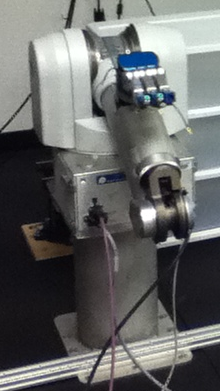
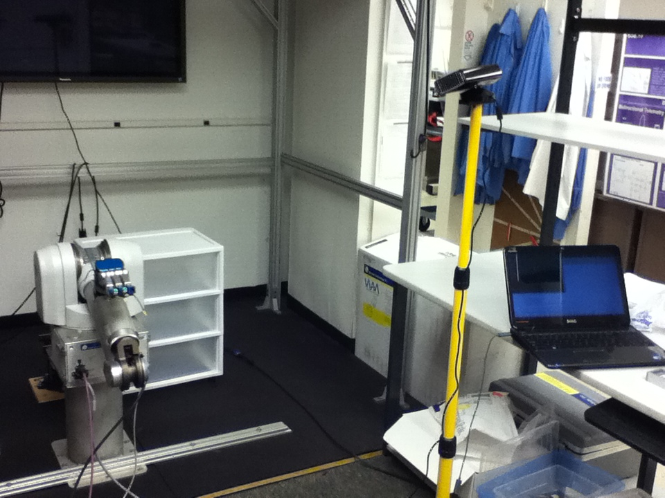

In the summer of 2011 I interned for two months at Dr. Gerald Loeb's lab at the University of Southern California, where he was developing the BioTAC human finger-like sensor. This internship intoduced me to computer vision and robotics. He was researching algorithms for exploratory touch movements that can gain enough information about an object to classify its texture properties. For this he was using BioTAC sensors fitted on a Barrett Whole Arm Manipulator.

I used the Kinect sensor and the Point Cloud Library to detect objects of interest on a table and to estimate their position in 3D space with respect to the Kinect.

This information would then be translated to the Barrett hand's co-ordinate system and used to guide the arm to the location of the object. From then on, manipulation would be controlled by the sense of touch.